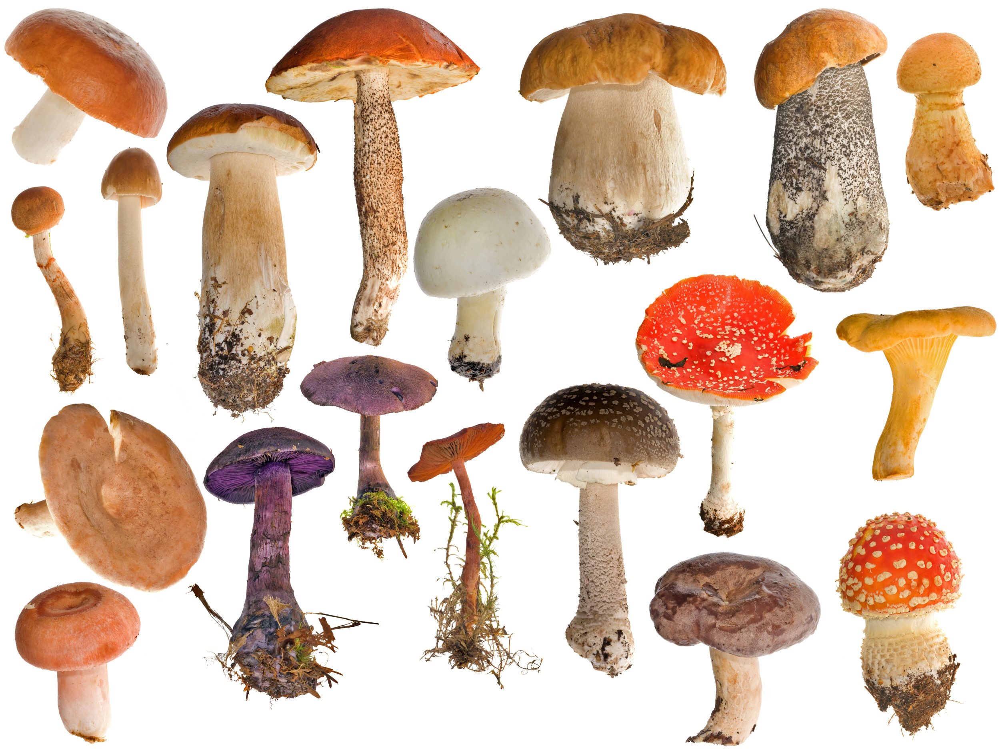
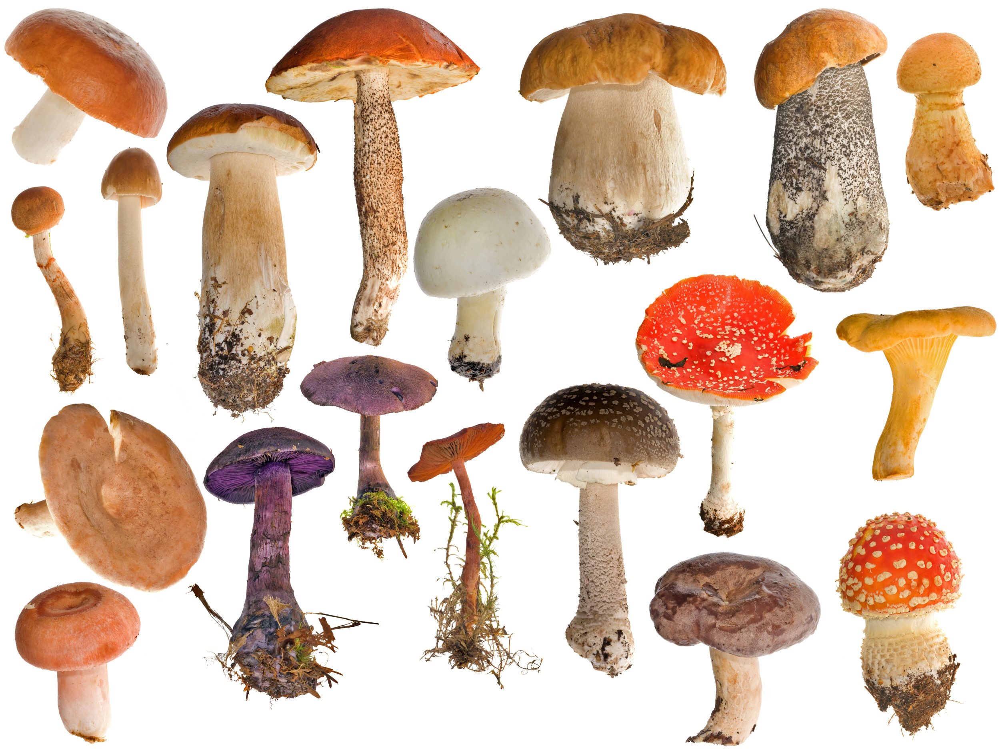
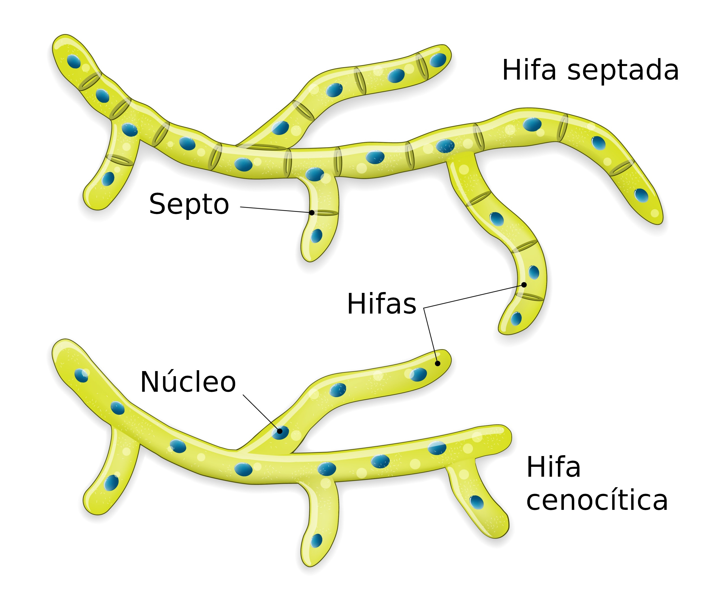
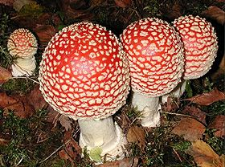
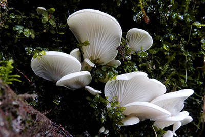
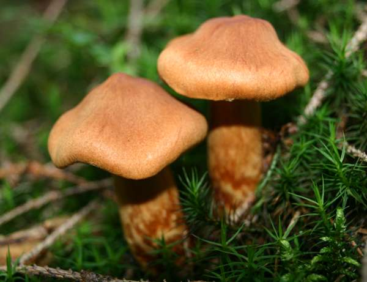
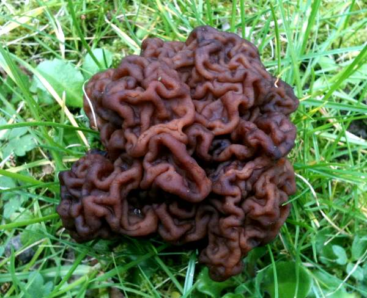
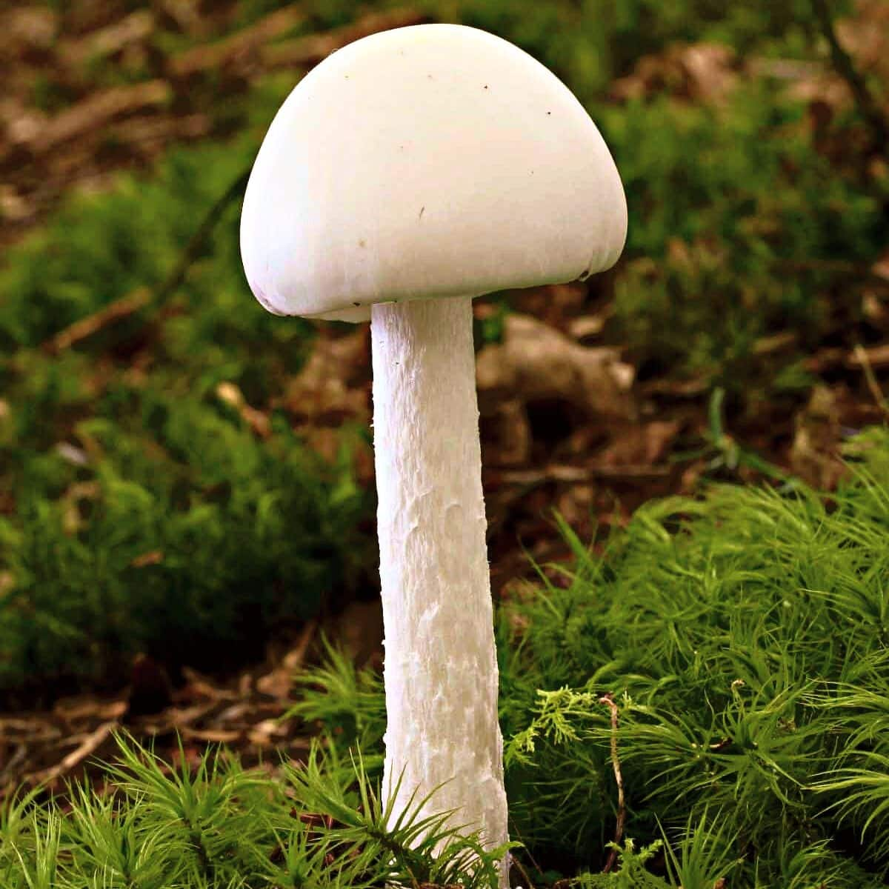

Cogumelos
Exemplos de Cogumelos
 

Os Cogumelos não são categorizados nem como plantas
nem como animais, são uma combinação de ambos, pois possuem células animais mas características muito
semelhantes a de plantas.

Os Cogumelos mais Venenosos do Mundo
Cogumelos, assim como plantas, podem possuir venenos para evitar de serem
consumidos, mas boa parte ainda assim é comestível, então vamos ver exemplos de vários cogumelos venenosos.
Amanita Muscaria

O cogumelo clássico, vermelho com pintas brancas,
muito conhecido pela franquia "Super Mario", é um dos cogumelos mais venenosos do mundo.
Pleurocybella Porrigens

Um fungo que afeta principalmente a madeira, sendo o
cogumelo de decaimento das florestas, até uma certa época, não sabia que era venenoso, até um incidente envenenar 59 pessoas e matar 17 delas.
Cortinarius Rubellus

Cogumelo muito parecido com outros cogumelos comestíveis, porém, é extremamente
venenoso, ainda não existe antidoto para seu veneno, se não morrer, a vítima fica com rim muito danificado.
Gyromitra Esculenta

Com o formato parecido com o de um cérebro, eu veneno afeta o figado, o sistema nervoso e os rins,
pode ser consumido se cozinhado corretamente.
Destroying Angels

Contém uma toxina extremamente forte com uma aparência tão inocente, pode ser detectado nos primeiros estágios,
com vomitos, delírios e cólicas, mas mesmo se tratado, o dano causado é permanente, só se resolvendo com transplantes.